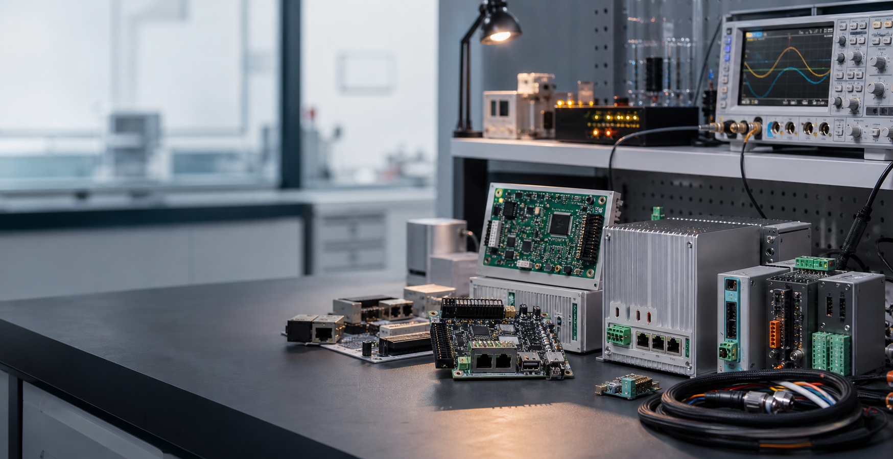

Embedded Product Development
Architecture, component selection, board design, firmware, enclosure-fit thinking, and prototype bring-up.

Industrial IoT · Embedded Systems · PCB Design
Professional embedded engineering for smart monitoring devices, industrial controllers, sensor systems, firmware, PCB prototypes, and automation-ready electronics.
Founded by Fawad Butt
What we build
MicroELab focuses on industrial embedded products where electronics, firmware, sensing, communication, and enclosure constraints need to work together. We help businesses build practical connected products, automation interfaces, test fixtures, and custom control electronics that can survive real operating conditions.
Architecture, component selection, board design, firmware, enclosure-fit thinking, and prototype bring-up.
Sensor acquisition, telemetry nodes, wireless/wired communication, gateways, dashboards, and device diagnostics.
Relay control, isolated inputs, actuator drivers, machine interfaces, panel electronics, and production fixtures.
Founder
Embedded and industrial electronics engineer focused on practical hardware, firmware, prototyping, and automation-ready solutions for real-world field environments.
Capabilities
Custom schematics, PCB layout, power sections, protection circuits, sensor interfaces, and manufacturable prototypes.
Microcontroller firmware for data acquisition, control loops, communication, diagnostics, calibration, and configuration.
Connected hardware for monitoring, telemetry, RS485/Modbus-style integrations, wireless links, and cloud-ready data paths.
Control panels, relay outputs, isolated inputs, machine signals, actuator drivers, and production environment interfaces.
Portfolio
Sensor-based monitoring unit for temperature, vibration, runtime, and fault signals with telemetry-ready firmware.
Compact control electronics for relays, solenoids, valves, motors, limit switches, and machine safety signals.
Embedded metering device for current, voltage, power, and equipment usage monitoring in industrial environments.
Bench hardware and firmware for board testing, pass/fail checks, serial logging, and repeatable production validation.
Technology
Workflow
Contact
Share your product idea, machine interface problem, PCB requirement, or firmware task. MicroELab can help move it from concept to working prototype.